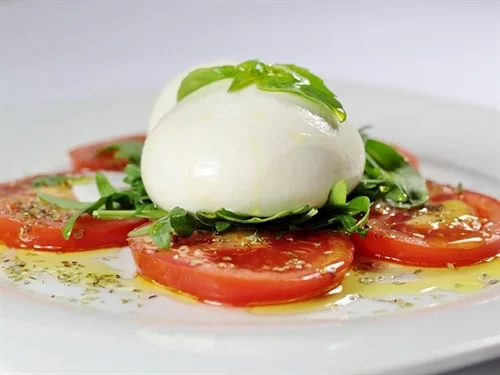
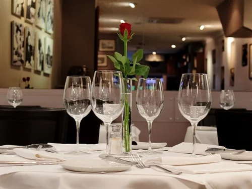
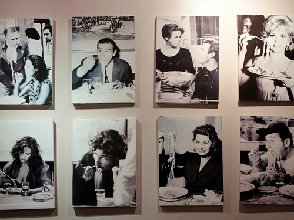
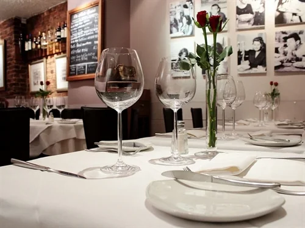
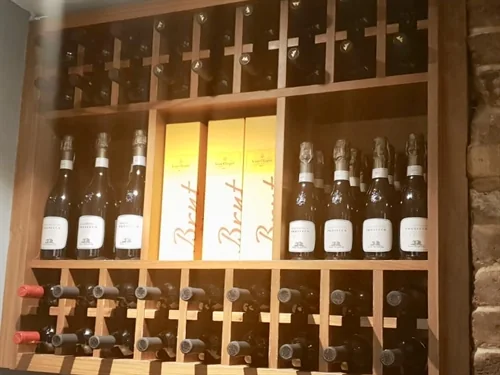
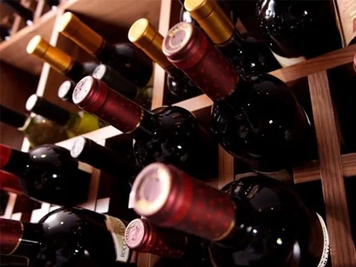

Burratina
Dalla Puglia, con pomodorini Datterini, basilico e buon olio d’oliva.
Antipasti £9–1963 Endell Street · Covent Garden
Da oltre trent’anni una famiglia in Endell Street: pasta fresca, vitello, pesce e la crostata di mele di Maria, sotto una parete di divi del cinema di origine italiana.


I teatri, a piedi
Dieci teatri del West End sono a meno di undici minuti a piedi. Diteci teatro e orario dello spettacolo, e vi diciamo a che ora arrivare.
Arrivate da Da Mario entro le
17:15
Due ore a tavola, poi una breve passeggiata fino al teatro.
Cena, 2 oreA piediMargine
Il tributo a Sinatra dell’artista del West End Aiden Kent, ogni mercoledì dal 13 gennaio 2027. Ingresso libero con la cena.

La nostra storia
Da Mario è un piccolo ristorante italiano di famiglia in Endell Street. Da più di trent’anni dà da mangiare a Covent Garden: spettatori diretti a teatro, pranzi di lavoro, compleanni e clienti affezionati che vengono da decenni.
Alle pareti, i ritratti in bianco e nero di attori con radici italiane. Sui tavoli, tovaglie di lino bianco. In cucina, pasta fresca, vitello, pesce e frutti di mare, e dolci fatti in casa, tra cui la crostata di mele di Maria. D’estate, i tavoli escono sul marciapiede.


La cantina
Una carta tutta italiana, da un Pinot Grigio facile ai Supertuscan. Chiedeteci pure: troviamo noi la bottiglia giusta per il piatto e per il budget.
In sala
Dicono di noi
Avete reso la serata del mio ottantesimo compleanno davvero indimenticabile. Il cibo è squisito, il servizio da sogno. È raro che un ristorante riesca a unire le due cose alla perfezione.
Vengo in questo ristorante da molti anni. L’accoglienza è sempre calorosa e sincera, e i piatti sono sempre al massimo livello, nella preparazione e nella presentazione.
Cucina italiana autentica, ospitalità di una volta. La vellutata di aragosta, le linguine, il tiramisù e il vino rosso, e soprattutto la gentilissima accoglienza del titolare e del suo staff.
Buoni regalo per compleanni, anniversari e Natale, di qualsiasi importo.
Acquista un buono regaloPrenotate online per sette o più persone: un calice di Prosecco in omaggio a ciascuno, con la cena.
Prenota per un gruppoDove siamo
Covent Garden 5 min · Tottenham Court Road 8 min · Holborn 8 min
| Lunedì | 12:30 – 23:00 |
|---|---|
| Martedì | 12:30 – 23:00 |
| Mercoledì | 12:30 – 23:00 |
| Giovedì | 12:30 – 23:00 |
| Venerdì | 12:30 – 23:00 |
| Sabato | 13:00 – 23:00 |
| Domenica | Chiuso |
Ultime prenotazioni alle 21:30. Chiuso nei giorni festivi (bank holiday) e dal 24 dicembre al 4 gennaio. Aperto le domeniche 6, 13 e 20 dicembre.